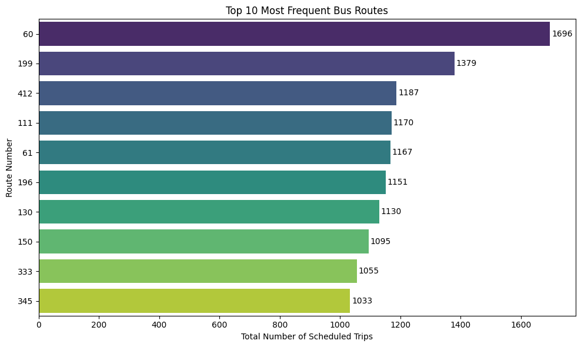
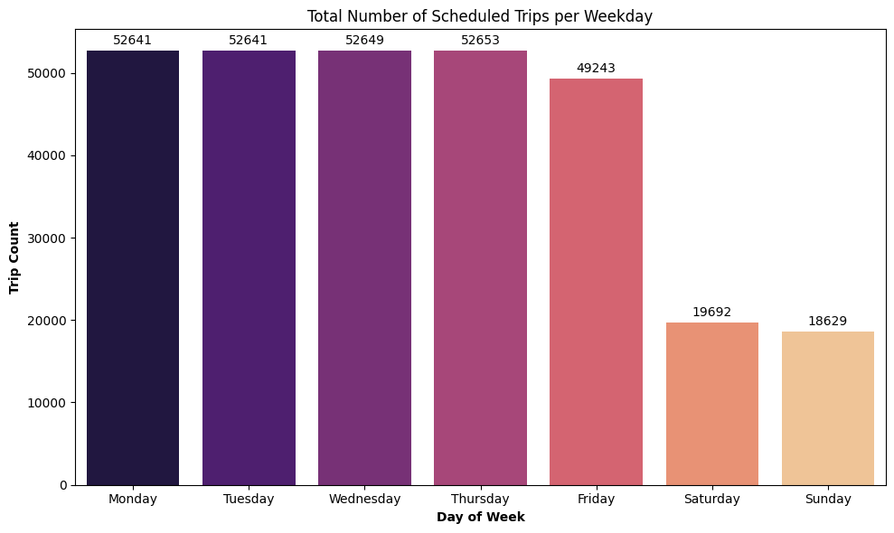
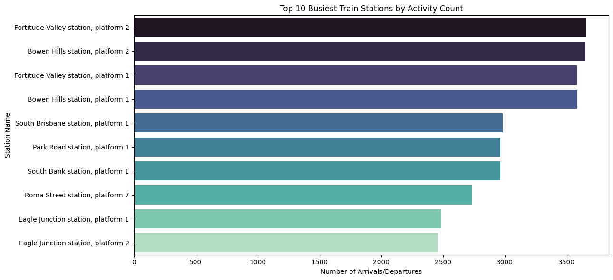
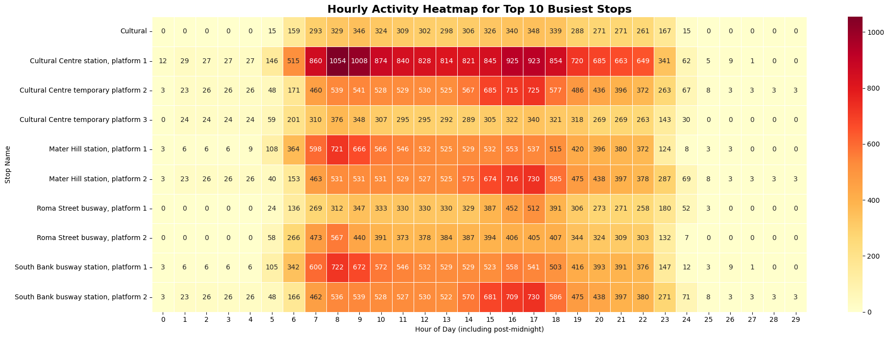

SEQ Public Transport Network Analysis
An analytical report on the efficiency, coverage, and operational patterns of the South East Queensland transport system using GTFS data.
Table of Contents
1. Executive Summary
This report presents a comprehensive analysis of the South East Queensland (SEQ) public transport network using scheduled data from Translink's General Transit Feed Specification (GTFS). The analysis reveals a system that is heavily optimized for weekday commuters and geographically centered around the Brisbane CBD. Key findings indicate that a small number of high-frequency bus routes, such as the CityGlider (60 & 61) and university-focused Route 66, form the backbone of the network. Service levels drop by nearly 50% on weekends. The network's busiest hubs, including King George Square Bus Station and Central Train Station, are concentrated in the CBD and exhibit classic bimodal peak activity during morning (7-9 AM) and evening (4-6 PM) commuter periods. This analysis provides a foundational understanding of the network's operational structure, which is critical for urban planning and service optimization.
2. Introduction
Understanding the structure and usage patterns of a public transport network is essential for effective urban planning, resource allocation, and improving citizen mobility. This project undertakes a deep-dive analysis of the SEQ public transport system, operated by Translink. By processing and analyzing the publicly available GTFS data, we aim to transform raw, tabular data into actionable insights about the network's scale, key corridors, operational patterns, and geographic distribution.
3. Problem Statement & Hypotheses
The primary challenge is to process a complex, multi-file relational dataset to answer fundamental questions about the network's characteristics. This project tests the following hypotheses:
- Route Dominance: A small subset of bus routes will account for a disproportionately large share of all scheduled trips.
- Weekday Bias: Scheduled services will be significantly more frequent on weekdays compared to weekends.
- CBD Centrality: The busiest transport hubs will be geographically concentrated in Brisbane's CBD.
- Commuter Peaks: Network activity at major hubs will peak during typical morning and evening rush hours.
4. Methodology
The analysis was conducted using a two-phase methodology: first, an ETL process using a Python script to ingest, clean, and load raw GTFS .txt files into a PostgreSQL database. Second, a Jupyter Notebook was used to perform SQL queries—including advanced window functions like RANK() and ROW_NUMBER()—to extract insights, which were then visualized using Python libraries (Matplotlib, Seaborn, Folium).
5. Analysis and Findings
5.1. Top 10 Most Frequent Routes
Finding: As predicted by Hypothesis 1, a few routes dominate service frequency. The CityGlider (60, 61) and UQ Lakes (66) routes have substantially more scheduled trips than others, establishing them as the primary arteries of the bus network.

Placeholder for the Most Frequent Routes chart.
5.2. Service Levels by Day of the Week
Finding: This chart strongly supports Hypothesis 2. There is a clear and significant drop in service levels on Saturday and Sunday compared to the consistent, high volume of trips from Monday to Friday.

Placeholder for the Service Levels by Day of the Week chart.
5.3. Busiest Transport Hubs & Geographic Distribution
Finding: The busiest bus and train stops are overwhelmingly located in or directly adjacent to the Brisbane CBD (e.g., King George Square, Cultural Centre, Central Station). This confirms Hypothesis 3, highlighting the CBD's role as the network's central nexus.

Placeholder for the Folium map of all stops.
5.4. Weekly & Hourly Activity Heatmaps
Finding: These heatmaps provide compelling evidence for Hypothesis 4. The hourly heatmap clearly illustrates the bimodal commuter pattern, with activity peaking between 7-9 AM and 4-6 PM.

Placeholder for the Hourly Activity heatmap.
5.5. Analysis with Window Functions
Finding: Using RANK() and DENSE_RANK(), the analysis identified the routes with the most extensive coverage. The "Great Circle Line" routes (598/599) service the highest number of unique stops, indicating they are crucial for connecting a wide range of suburbs rather than just a direct point-to-point corridor.
Top 15 Bus Routes Ranked by Stops:
route_short_name route_long_name stop_count rank_val
0 599 Great Circle Line anti-clockwise 173 1
1 598 Great Circle Line clockwise 172 2
2 330 Bracken Ridge to City, Queen Street 109 3
6. Limitations of the Analysis
- Scheduled vs. Actual Data: This analysis is based on the GTFS schedule. It does not reflect real-world conditions such as traffic delays, vehicle breakdowns, or trip cancellations.
- No Passenger Data: The metric "activity count" is a proxy for how "busy" a stop is and does not represent actual passenger numbers.
- Static Dataset: The analysis is a snapshot based on a single GTFS data release and does not capture seasonal variations or long-term trends.
7. Interactive Dashboard Analysis in Power BI
To make the findings accessible and allow for dynamic, user-driven exploration, a comprehensive dashboard was developed using Microsoft Power BI. The dashboard includes high-level KPIs, interactive slicers, and a geospatial map, allowing users to dynamically filter and explore the data, confirming all initial hypotheses while discovering more nuanced patterns.
Placeholder for the Power BI Dashboard screenshot.
8. Conclusion & Recommendations
This analysis successfully processed raw transit data to reveal the core operational characteristics of the SEQ public transport network. The findings confirmed all initial hypotheses, painting a picture of a system that is CBD-centric and tailored to a weekday-commuting population.
Recommendations for future work include:
- Integrate real-time GTFS data to analyze on-time performance and identify routes prone to delays.
- Use network graph analysis to identify "transport deserts" or areas with poor access to key amenities.
- Develop a more advanced interactive dashboard to allow planners and the public to explore these insights dynamically.
Explore the Code
For a detailed look at the Python scripts, ETL process, and SQL queries used in this analysis, please visit the project repository on GitHub.
View on GitHub